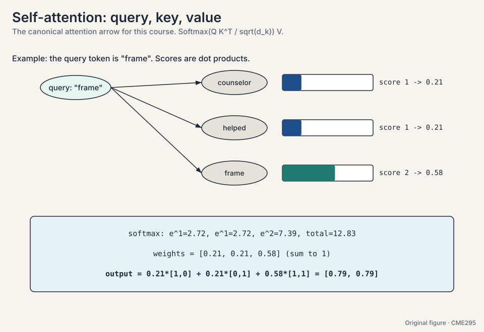
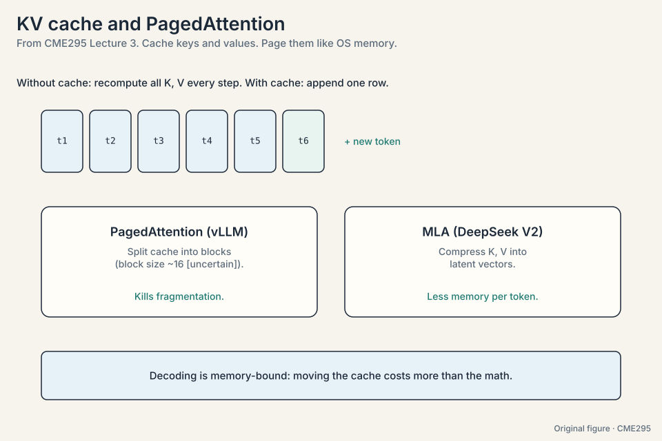

CME295 Crash Course
30 minutes · interview speed
This page tells the whole story fast, the way the course tells it: each idea earns its place by answering a problem. Every section carries one worked number. Links at the end take you into the full lesson for the derivations, the diagrams, and the follow-ups.
1. Attention deletes the chain
The problem was distance. An RNN fades the first token of a long sentence to (0.5)^6, under 2%, by the time the model needs it. The fix: let every token talk to every other token directly. Query against keys, softmax into weights, mix the values. One line: Attention = softmax(QK^T / sqrt(d_k)) V.
Watch it on the course’s toy. Tokens counselor [1,0], helped [0,1], frame [1,1]. Query for “frame”: scores [1,1,2], weights [0.21,0.21,0.58], new “frame” = [0.79,0.79]. The match decided the mix. Every pair meets in one step. All pairs compute in parallel. gradient paths stay short. The price is quadratic: 16.7M scores at N = 4,096.

2. Order, efficiency, and the BERT family
Attention sees a set, not a sequence, so order gets added back. Positions went relative: RoPE rotates queries and keys by angle, so the dot product keeps only distance, with no extra parameters. The stack went pre-norm with RMSNorm for deep stability. Full attention costs O(n^2), so sliding windows cut it to n*w (8x fewer scores at n = 4,096, w = 512). The KV cache dominates inference memory, so GQA shares 32 query heads over 8 KV heads: 4x smaller.
BERT is the encoder-only sibling: read both directions, mask 15% of tokens with the 80/10/10 split, add next-sentence prediction at 50/50, then fine-tune a small head. Great for understanding. It cannot generate. T5 frames everything as text-to-text with span corruption: mask spans, insert sentinels, decode the fills.
3. Scale next-token prediction and you get an LLM
Take the decoder-only transformer and predict the next token on trillions of tokens. The model outputs a distribution. Decoding turns it into a token. On the toy distribution (lit 0.50, read 0.30, slept 0.12, ate 0.08): greedy takes the argmax, beam keeps B hypotheses with length normalization, sampling draws from it, top-K cuts the tail, top-P adapts the set. Temperature reshapes: exp(z_i/T) turns logits [3,2,1] spiky at T = 0.5 and flat at T = 2. Sampling is the only randomness in the machine.
Sparse MoE routes each token to its top-1 or top-2 experts: capacity without proportional compute, and routing collapse is the failure mode to name. Inference is memory-bound, not compute-bound: a 70B model moves 140 GB per token. The KV cache stores past keys and values. Paging kills fragmentation. MLA compresses. Speculative decoding drafts k and verifies in one pass.

4. Training: count the work, split the budget
Transfer learning: pre-train once on trillions of tokens, SFT cheaply per task, preference-tune for taste. Price the run: GPT-3 cost 6 * 175B * 300B = 3.15e23 FLOPs, which is 294 GPU-years at 34 TFLOPS, or 10.7 days on 10,000 GPUs at fantasy efficiency. Chinchilla corrected the budget: 20 tokens per parameter, so GPT-3 was 11.7x undertrained at 300B tokens for 175B params.
No single GPU holds 2.1 TB (Adam states alone are 1.4 TB), so ZeRO shards optimizer, gradients, and params across workers. FlashAttention respects the memory hierarchy: tile to SRAM, running softmax, recompute instead of re-reading HBM. Exact, ~10x fewer HBM accesses. SFT teaches format with loss on output tokens only. LoRA freezes W0 and trains BA at rank 4: 512x fewer params on a 4096 block. QLoRA adds NF4 and double quantization for ~16x less VRAM.

5. Preference tuning teaches “not this”
SFT shows good answers but never shows bad ones. Pairwise data (prompt, chosen, rejected) supplies the negative signal. Bradley-Terry turns pairs into scores: P(i beats j) = sigma(r_i - r_j). On the toy, r = 2 vs 1 gives P = 0.731 and loss 0.313, while the reversed ordering pays 1.313. Train pairwise, score pointwise.
Then RL: the LLM is the agent, each token an action, reward one sparse number at the end. PPO clips the policy step (the toy: r = 1.5 clipped to 1.2 with eps = 0.2) and keeps a KL leash to the SFT model so the policy cannot game the proxy. The advantage centers the signal: reward minus baseline. Reward hacking is the failure mode: reward climbs while human judgment falls. DPO solves the same objective in closed form and trains supervised, with beta ~ 0.1. Best-of-N (sample 4, keep the best) is the free baseline every method must beat. Interview one-liner: “Bradley-Terry makes rewards, PPO optimizes them, DPO skips the RL.”
6. Reasoning: verify, then let RL explore
One-shot answers fail on multi-step problems. Think-then-answer splits generation into a hidden chain and a final answer, billed as output tokens. Measure with pass@k = 1 - C(n-c,k)/C(n,k): on the toy (n=10, c=3, k=2), 0.3 lifts to 0.533. Sample warm (0.2-0.8) for diversity.
Code and math have verifiable answers, so the checker is free and RL runs without humans. GRPO samples a group per prompt and z-scores advantages inside it: rewards [0,0,1,0] give +1.73 to the winner and -0.58 to each loser, with no value function. The 1/|o_i| term over-rewards long failures (a 50-token failure is downweighted 10x harder than a 500-token one). DAPO and Dr. GRPO fix the length bias. DeepSeek’s R1-Zero proved RL on the base model creates reasoning. the full R1 pipeline adds cold-start SFT, rejection sampling, and distillation to small models.

7. RAG grounds. Agents act
The model’s knowledge is frozen at its cutoff. RAG retrieves fresh text and pastes it into the prompt: retrieve, augment, generate. Chunk around 500 tokens with overlap. Recall with bi-encoder embeddings (cosine 0.99 picks the results article over 0.29 sports news), precision with a cross-encoder re-ranker. BM25 for exact names (“Cuddly” must match “Cuddly”). Hybrid in practice. Judge it with NDCG on MTEB: the toy ranking scores 0.852 against the ideal.
Tools turn the model into an agent: docs become a JSON schema, the model picks a tool and fills its arguments, code executes, the result feeds back. ReAct loops observe, plan, act until the goal is met. MCP standardizes the plumbing. Agents fail seven ways: the punt, hallucinated tools, wrong tool or args, bad or missing output, bad synthesis. Categorize failures in groups and fix the groups. Prompt injection is a control-flow attack on the loop: treat tool output as data, never as instructions.

8. Evaluation is a ladder of proxies
Free-form output resists measurement, so we climb a ladder. Humans are ideal but slow and subjective. Correct their agreement for chance with kappa, because observed 0.85 agreement is kappa 0.70 at balanced base rates and 0.17 at 90/10. Rule metrics (BLEU, ROUGE, METEOR) compare against references but punish paraphrase: the toy scores 0.39 on a good answer and near zero on a perfect paraphrase. LLM-as-a-judge scales: prompt plus response plus criteria in, rationale then score out, binary scale, structured output. Correct three biases: position (ask both orders), verbosity (say so, show examples), self-enhancement (use a different, bigger judge). Keep temperature 0.1-0.2 and calibrate against humans. Never overoptimize the proxy.
Benchmarks profile, they do not crown: MMLU (knowledge), AIME/PIQA (reasoning), SWE-bench (coding), HarmBench (safety), tau-bench (agents, pass-hat@k). Read them with Pareto, contamination, and Goodhart in mind. Then try the models yourself.
9. Frontiers: patches, masks, and the open design space
The transformer is a substrate. ViT treats a 224x224 image as 196 patches plus [CLS] and beats CNNs: weak inductive bias plus big data wins when data is abundant. Vision-language models concatenate image and text tokens or inject images at cross-attention. Diffusion language models translate noise to masking: mask is noise, unmask in N fixed steps instead of one token at a time, ~10x faster on long outputs, natural for fill-in-the-middle. LLaDA works the math.
Data is the new bottleneck: ~80% of search results LLM-generated is the speaker’s estimate, and training on synthetic text causes model collapse, each generation training on a narrower shadow. The knobs are all still live: optimizers (Muon), norms (RMSNorm), attention variants, activations, MoE vs dense. The hard problems: continuous learning, hallucination by design, personalization, safety.
Rapid fire
What are Q, K, V? Query seeks, key advertises, value is the payload. Projections of each token, re-learned per layer.
The attention toy? Scores [1,1,2] -> weights [0.21,0.21,0.58] -> new “frame” = [0.79,0.79].
Why sqrt(d_k)? Without it, dot products grow with dimension, softmax saturates, gradients die.
What does causal masking do? Sets future scores to negative infinity before softmax, so decoders cannot see ahead.
RoPE in one sentence? Rotates queries and keys by position, so attention scores depend on relative distance.
Greedy vs beam vs sampling? Greedy: argmax, safe. Beam: k paths, stable. Sampling: random from the distribution, human.
What is the KV cache? Stored past keys and values, making each decode step linear instead of quadratic.
Chinchilla’s rule? 20 tokens per parameter. Balance size and data at fixed compute. GPT-3 was 11.7x undertrained.
LoRA? W = W0 + BA, rank ~4. Train A,B, freeze W0. 512x fewer params on a 4096 block.
Bradley-Terry? P(i beats j) = sigma(r_i - r_j). Pairwise labels to pointwise reward. The toy: 2 vs 1 pays 0.313 vs 1.313.
Why does PPO need KL to the SFT model? To stop the policy drifting into reward-hacking territory.
DPO vs PPO? DPO solves the RLHF objective in closed form, supervised. No value head, no rollouts. Beta ~ 0.1.
GRPO’s advantage? Z-scored within the sampled group. No value function needed. [0,0,1,0] -> +1.73 / -0.58.
pass@k? 1 - C(n-c,k)/C(n,k). Chance at least one of k samples is right. The toy: 0.3 to 0.533.
RAG’s three steps? Retrieve, augment, generate.
Bi-encoder vs cross-encoder? Bi-encoder: fast recall with embeddings. Cross-encoder: joint scoring, precise re-rank.
ReAct loop? Observe, plan, act, repeat until the goal.
Seven agent failure modes? Punt, hallucinated tool, wrong tool, wrong args, bad output, no output, bad synthesis.
Why rationale before score in judging? Externalizing reasoning first empirically improves the judgment, like chain-of-thought.
Three judge biases and fixes? Position (both orders, vote), verbosity (guidelines, examples), self-enhancement (different judge).
pass-hat@k? Probability all k attempts succeed. Agents need reliability, not luck.
Goodhart’s law? When a measure becomes a target, it ceases to be a good measure.
ViT’s lesson? Patches as tokens. Weak inductive bias plus big data beats strong bias.
Masked diffusion in one line? Mask is noise. Unmask in N fixed steps instead of one token at a time.
Model collapse in one line? Each generation trains on a narrower shadow of the last.